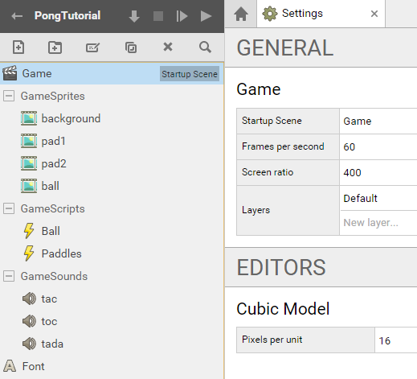
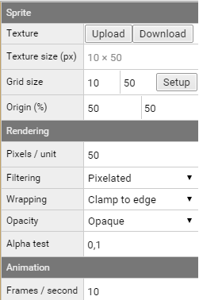
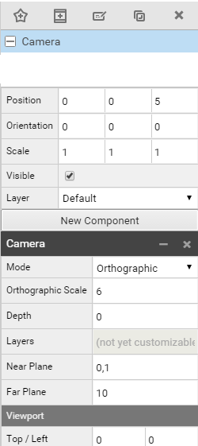
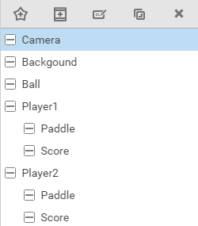
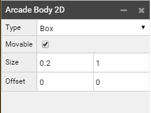

SUPERPOWERS TUTORIAL #1 SUPER PONG
Chapter 2 : Preparing Superpowers
Building the project structure
I'm assuming you already have Superpowers installed and working so we can jump directly to the game. If you want to learn the basics of the application please check the official documentation.
We'll start our server and create our new project that we'll call PongTutorial.
We'll start by creating a Scene (new asset or ctrl+n) called Game.
In Settings, put Game in the Startup Scene (drag and drop or write Game). A gray Startup Scene label should appear on the sidebar next to Game. We'll also set the Screen ratio to (400, 300)
We'll create a hierarchy structure for our assets, putting sprites files inside GameSprites, sounds in GameSounds and scripts in GameScripts.
We'll create new assets, 4 Sprites, 3 Sounds and 2 Scripts, and also add a Font asset. You can leave the assets empty for now, we'll add their content below.
Note: The order of your assets and folders does not matter.
- Game
- GameSprites
- background
- pad1
- pad2
- ball
- GameScripts
- Ball
- Paddles
- GameSounds
- tac
- toc
- tada
- Font

Loading the game assets
An asset is a box holding an element of the game, it can be an image, a script, a sound, etc.
We have built the game assets structure but they will stay empty if we don't give them contents (which is files for sprites and sounds and code for scripts).
First you will need to download the source assets on the repository github here.
The sprites and sound assets need to be uploaded inside the project. For each asset, we load the related file (For example, background.png in asset background).
After uploading the images, the sprites assets need calibration by clicking Setup. The grid size must be the same size than the image because we don't use frames for this game. Setup will ask you "How many frames per row?" - we'll accept the default frames/row and frames/column which is 1 for both.
Change the rendering Pixels / Unit of each Sprite assets to 50 (default is 100).
We don't need to change the origin of our sprites. The default percentage (50, 50) sets the origin to the center center which is good for all of our sprites for this game.
Here the example of pad2 with the correct set up.

In the Font Asset, we'll change the Pixels / Unit to 100 and the Size to 64.
After loading the sound file into the Sound assets, everything should be fine, you can just test each sound.
We are now finished with the assets, and can start to build our game scene.
Building the scene
The Scene is the screen where all objects (called actors) are connected together.
We will now set all the objects of the scene. We call an object inside the scene an Actor.
To see the others Actors inside the game, we first need a Camera Actor.
Note : We can switch the camera mode 2D / 3D to navigate inside the scene, see documentation.
We'll create a new actor that we'll name Camera.
Set the position on axis Z (the third) to 5 to place the camera to the front of all others objects who have a position on axis Z less than 5 (Position will be 0, 0, 5).
Add a new component of type Camera.
Change the mode to Orthographic.
Now set the Orthographic Scale to 6 (we do this to fit with the background).

Now we'll create all of the Actor objects, following this organization of actors :

We'll add a new component of type Sprite Renderer in Background Actor and select the Sprite background as the Sprite. (or write the path GameSprites/background)
We'll do this step again for the Actors Ball, and the two paddles of Player1 and Player2. For each of them we'll create a new component Sprite Renderer and connect the Sprite Path of the correct Sprite. Pad1 for the Paddle of Player1, etc.
We'll create a new component Text Renderer for each of the Score Actors and select the Font in the Font area. We write 0 to the Text area.
Note : When the project becomes bigger, it is possible to duplicate Actors to avoid repetition, but as we are learning, repetition of this step is important.
We have everything inside the scene now.
We need to set all the correct positions of the Actors to be able to see them nicely when we launch the game.
We have already set the Position of the Actor Camera to (0, 0, 5), here the position of all the others Actors :
- Background (0, 0, 0)
- Ball (0, 0, 4)
- Player1 (0, 0, 0)
- Paddle (-3.7, 0, 4)
- Score (-2, 2.5, 2)
- Player2 (0, 0, 0)
- Paddle (3.7, 0, 4)
- Score (2, 2.5, 2)
To finish we can change the color of each Score Actor, you can do so by clicking on the little checkbox next to the label color and choosing a color. Here the hexadecimal colors codes:
- Player 1 – Score : f14735
- Player 2 – Score : 356ef1
Ok, now all the Actors are placed and we can launch the game to see if everything displays correctly.
Right now, nothing will happen beside the display and it is normal. We need to start programming the logic of our game to have some interaction. However a last step before jumping in the code is to set the Physic Bodies to our sprites, we will need these solid bodies for the collision between the ball and the paddles.
Setting Arcade Bodies
In our Game Scene, we need to gave new component Arcade Body 2D to both of our Paddles and to our Ball.
We then change for both paddles the size of x to 0.2 and keep y to 1 (size = 0.2, 1) and for the ball the size of x and y to 0.2 (size = 0.2, 0.2). Now the Arcade Body outlines are the same size as our sprites.
In the game the illusion is than the sprite ball will collide with the sprite paddle, when in reality it is the ball physic body and the paddles physic bodies that will collide. The sprites are just attached to them and follow the movement of the body.
